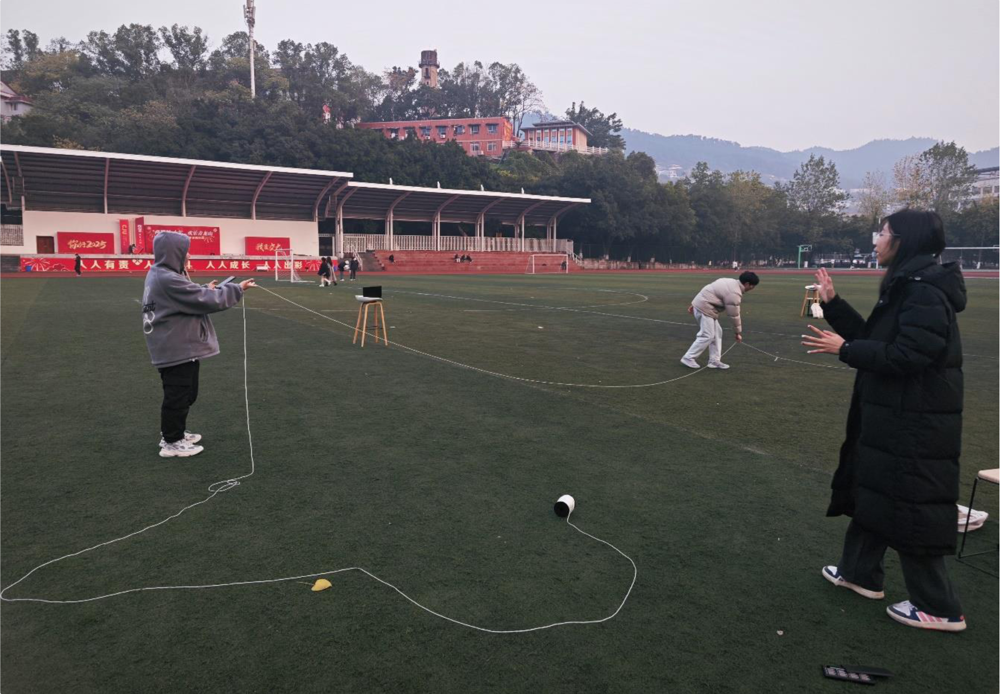
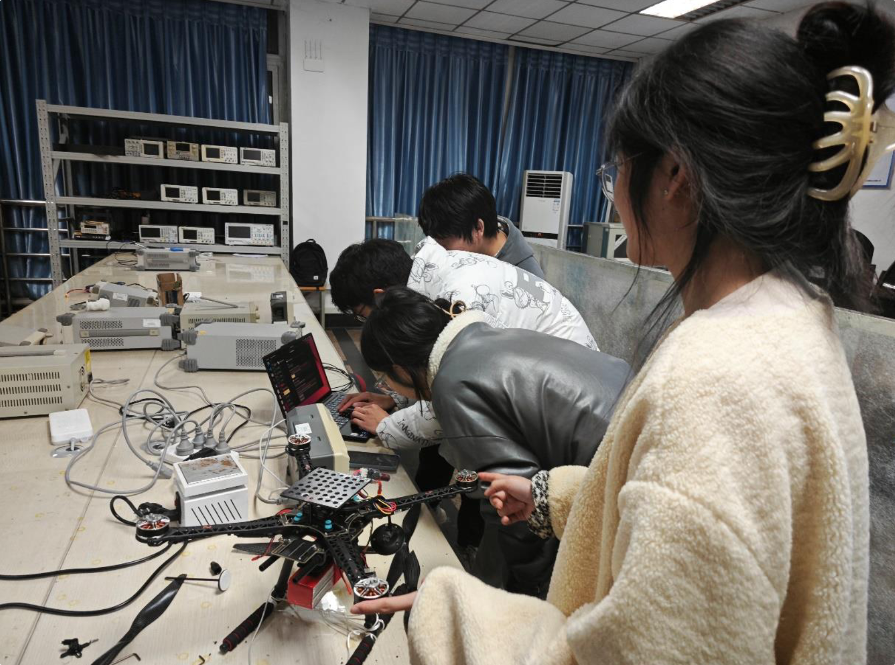
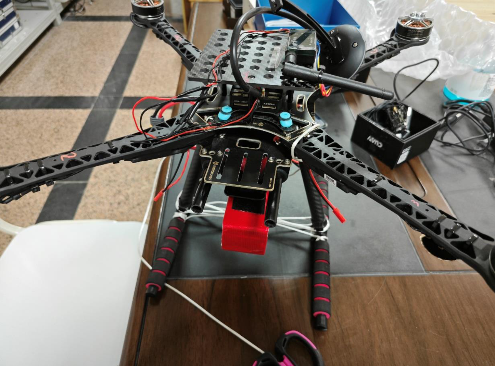

GNSS / IMU / UWB
围绕定位与状态估计开展多源传感器融合实践，理解不同传感器在精度、可用性和环境适应性之间的取舍。
项目 / 早期工程实践
这些项目从多源定位、移动机器人到无人机实验，训练了我把感知、控制与实际环境连接起来的方式。




围绕定位与状态估计开展多源传感器融合实践，理解不同传感器在精度、可用性和环境适应性之间的取舍。
在 Jetson Nano 上完成视觉识别到交互拾取的系统尝试，将模型推理与面向任务的机器人行为连接起来。